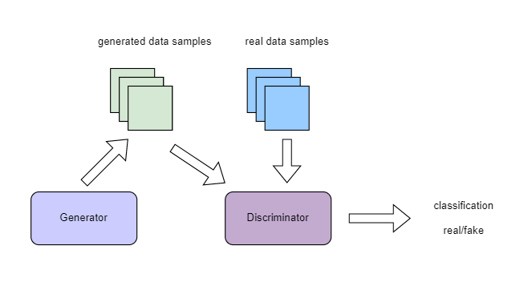
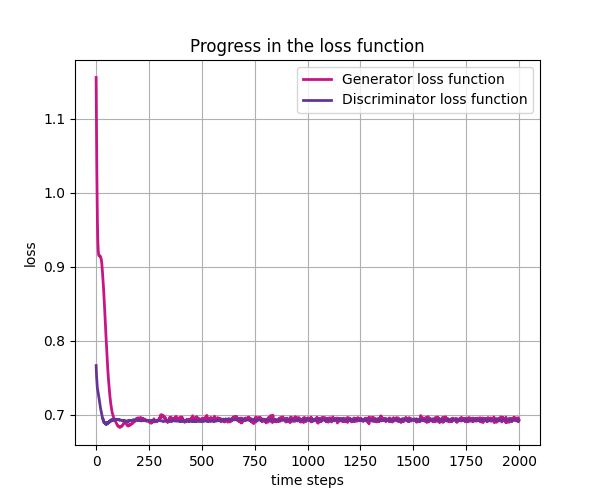

使用pyQPanda2量子机器学习模块¶
Warning
以下接口的量子计算部分使用pyqpanda2 https://pyqpanda-toturial.readthedocs.io/zh/latest/。
由于pyqpanda2以及pyqpanda3兼容性问题,您需要自行安装pyqpnda2, pip install pyqpanda
量子计算层¶
QuantumLayer¶
QuantumLayer是一个支持量子含参线路作为参数的自动求导模块的封装类。用户定义一个函数作为参数 qprog_with_measure ,该函数需要包含pyQPanda22定义的量子线路:一般包含量子线路的编码线路,演化线路和测量操作。
该类可以嵌入量子经典混合机器学习模型,通过经典的梯度下降法,使得量子经典混合模型的目标函数或损失函数最小。
用户可通过参数 diff_method 指定 QuantumLayer 层中量子线路参数的梯度计算方式,``QuantumLayer`` 当前支持有限差分法 finite_diff 以及 parameter-shift 方法。
有限差分法是估算函数梯度最传统和最常用的数值方法之一。主要思想是用差分代替偏导数:
若使用 parameter-shift 方法,我们使用如下目标函数:
理论上可以通过 parameter-shift 这一更精确的方法计算量子线路中参数对哈密顿量的梯度:
- class pyvqnet.qnn.quantumlayer.QuantumLayer(qprog_with_measure, para_num, machine_type_or_cloud_token, num_of_qubits: int, num_of_cbits: int = 1, diff_method: str = 'parameter_shift', delta: float = 0.01, dtype=None, name='')¶
变分量子层的抽象计算模块。对一个参数化的量子线路进行仿真,得到测量结果。该变分量子层继承了VQNet框架的梯度计算模块,可以计算线路参数的梯度,训练变分量子线路模型或将变分量子线路嵌入混合量子和经典模型。
- Parameters:
qprog_with_measure – 用pyQPanda22构建的量子线路运行和测量函数。
para_num – int - 参数个数。
machine_type_or_cloud_token – qpanda量子虚拟机类型或pyQPanda22 量子云令牌 : https://pyqpanda-toturial.readthedocs.io/zh/latest/Realchip.html。
num_of_qubits – 量子比特数。
num_of_cbits – 经典比特数,默认为1。
diff_method – 求解量子线路参数梯度的方法,“参数位移”或“有限差分”,默认参数偏移。
delta – 有限差分计算梯度时的 delta。
dtype – 参数的数据类型,defaults:None,使用默认数据类型:kfloat32,代表32位浮点数。
name – 这个模块的名字, 默认为””。
- Returns:
一个可以计算量子线路的模块。
Note
qprog_with_measure是pyQPanda22中定义的量子线路函数 :https://pyqpanda-toturial.readthedocs.io/zh/latest/QCircuit.html。
此函数必须包含以下参数作为函数入参(即使某个参数未实际使用),否则无法在QuantumLayer中正常运行。
qprog_with_measure (input,param,qubits,cbits,machine)
input: 输入一维经典数据。如果没有输入可以输入 None。
param: 输入一维的变分量子线路的待训练参数。
qubits: 该QuantumLayer分配的量子比特,类型为pyQpanda.Qubits。
cbits: 由QuantumLayer分配的经典比特,用来辅助测量函数,类型为 pyQpanda.ClassicalCondition。如果线路不使用cbits,也应保留此参数。
machine: 由QuantumLayer创建的模拟器,例如CPUQVM,GPUQVM,QCloud等。
使用QuantumLayer的 m_para 属性获取变分量子线路的训练参数。该参数为QTensor类,可使用to_numpy()接口转化为numpy数组。
Note
该类具有别名 QpandaQCircuitVQCLayer 。
Example:
import pyqpanda as pq from pyvqnet.qnn.measure import ProbsMeasure from pyvqnet.qnn.quantumlayer import QuantumLayer import numpy as np from pyvqnet.tensor import QTensor def pqctest (input,param,qubits,cbits,machine): circuit = pq.QCircuit() circuit.insert(pq.H(qubits[0])) circuit.insert(pq.H(qubits[1])) circuit.insert(pq.H(qubits[2])) circuit.insert(pq.H(qubits[3])) circuit.insert(pq.RZ(qubits[0],input[0])) circuit.insert(pq.RZ(qubits[1],input[1])) circuit.insert(pq.RZ(qubits[2],input[2])) circuit.insert(pq.RZ(qubits[3],input[3])) circuit.insert(pq.CNOT(qubits[0],qubits[1])) circuit.insert(pq.RZ(qubits[1],param[0])) circuit.insert(pq.CNOT(qubits[0],qubits[1])) circuit.insert(pq.CNOT(qubits[1],qubits[2])) circuit.insert(pq.RZ(qubits[2],param[1])) circuit.insert(pq.CNOT(qubits[1],qubits[2])) circuit.insert(pq.CNOT(qubits[2],qubits[3])) circuit.insert(pq.RZ(qubits[3],param[2])) circuit.insert(pq.CNOT(qubits[2],qubits[3])) #print(circuit) prog = pq.QProg() prog.insert(circuit) # pauli_dict = {'Z0 X1':10,'Y2':-0.543} rlt_prob = ProbsMeasure([0,2],prog,machine,qubits) return rlt_prob pqc = QuantumLayer(pqctest,3,"CPU",4,1) #classic data as input input = QTensor([[1,2,3,4],[40,22,2,3],[33,3,25,2.0]] ) #forward circuits rlt = pqc(input) grad = QTensor(np.ones(rlt.data.shape)*1000) #backward circuits rlt.backward(grad) print(rlt) # [ # [0.2500000, 0.2500000, 0.2500000, 0.2500000], # [0.2500000, 0.2500000, 0.2500000, 0.2500000], # [0.2500000, 0.2500000, 0.2500000, 0.2500000] # ]
如果使用GPU,参考下面的例子:
Example:
import pyqpanda as pq from pyvqnet.qnn.measure import ProbsMeasure from pyvqnet.qnn.quantumlayer import QuantumLayer import numpy as np from pyvqnet.tensor import QTensor,DEV_GPU_0 def pqctest (input,param,qubits,cbits,machine): circuit = pq.QCircuit() circuit.insert(pq.H(qubits[0])) circuit.insert(pq.H(qubits[1])) circuit.insert(pq.H(qubits[2])) circuit.insert(pq.H(qubits[3])) circuit.insert(pq.RZ(qubits[0],input[0])) circuit.insert(pq.RZ(qubits[1],input[1])) circuit.insert(pq.RZ(qubits[2],input[2])) circuit.insert(pq.RZ(qubits[3],input[3])) circuit.insert(pq.CNOT(qubits[0],qubits[1])) circuit.insert(pq.RZ(qubits[1],param[0])) circuit.insert(pq.CNOT(qubits[0],qubits[1])) circuit.insert(pq.CNOT(qubits[1],qubits[2])) circuit.insert(pq.RZ(qubits[2],param[1])) circuit.insert(pq.CNOT(qubits[1],qubits[2])) circuit.insert(pq.CNOT(qubits[2],qubits[3])) circuit.insert(pq.RZ(qubits[3],param[2])) circuit.insert(pq.CNOT(qubits[2],qubits[3])) #print(circuit) prog = pq.QProg() prog.insert(circuit) # pauli_dict = {'Z0 X1':10,'Y2':-0.543} rlt_prob = ProbsMeasure([0,2],prog,machine,qubits) return rlt_prob #这里的"CPU" 指的是qpanda量子计算模拟器使用CPU,跟pyvqnet是否使用GPU无关。 pqc = QuantumLayer(pqctest,3,"CPU",4,1) #这里使用toGPU将QuantumLayer 移动到GPU上 pqc.toGPU() #classic data as input input = QTensor([[1,2,3,4],[40,22,2,3],[33,3,25,2.0]] ) input.toGPU() #forward circuits rlt = pqc(input) grad = QTensor(np.ones(rlt.data.shape)*1000,device=DEV_GPU_0) #backward circuits rlt.backward(grad) print(rlt)
QuantumLayerV2¶
如您更加熟悉pyQPanda22语法,可以使用该接口QuantumLayerV2,自定义量子比特 qubits ,经典比特 cbits ,后端模拟器 machine 加入QuantumLayerV2的参数 qprog_with_measure 函数中。
- class pyvqnet.qnn.quantumlayer.QuantumLayerV2(qprog_with_measure, para_num, diff_method: str = 'parameter_shift', delta: float = 0.01, dtype=None, name='')¶
变分量子层的抽象计算模块。对一个参数化的量子线路使用pyQPanda22进行仿真,得到测量结果。该变分量子层继承了VQNet框架的梯度计算模块,可以使用参数漂移法等计算线路参数的梯度,训练变分量子线路模型或将变分量子线路嵌入混合量子和经典模型。
- Parameters:
qprog_with_measure – 用pyQPand构建的量子线路运行和测量函数。
para_num – int - 参数个数。
diff_method – 求解量子线路参数梯度的方法,“参数位移”或“有限差分”,默认参数偏移。
delta – 有限差分计算梯度时的 delta。
dtype – 参数的数据类型,defaults:None,使用默认数据类型:kfloat32,代表32位浮点数。
name – 这个模块的名字, 默认为””。
- Returns:
一个可以计算量子线路的模块。
Note
qprog_with_measure是pyQPanda22中定义的量子线路函数 :https://pyqpanda-toturial.readthedocs.io/zh/latest/QCircuit.html。
此函数必须包含以下参数作为函数入参(即使某个参数未实际使用),否则无法在QuantumLayerV2中正常运行。
与QuantumLayer相比。该接口传入的变分线路运行函数中,用户应该手动创建量子比特和模拟器: https://pyqpanda-toturial.readthedocs.io/zh/latest/QuantumMachine.html,
如果qprog_with_measure需要quantum measure,用户还需要手动创建需要分配cbits: https://pyqpanda-toturial.readthedocs.io/zh/latest/Measure.html
量子线路函数 qprog_with_measure (input,param,nqubits,ncubits)的使用可参考下面的例子。
input: 输入一维经典数据。如果没有,输入 None。
param: 输入一维的变分量子线路的待训练参数。
Note
该类具有别名 QpandaQCircuitVQCLayerLite 。
Example:
import pyqpanda as pq from pyvqnet.qnn.measure import ProbsMeasure from pyvqnet.qnn.quantumlayer import QuantumLayerV2 import numpy as np from pyvqnet.tensor import QTensor def pqctest (input,param): num_of_qubits = 4 machine = pq.CPUQVM() machine.init_qvm() qubits = machine.qAlloc_many(num_of_qubits) circuit = pq.QCircuit() circuit.insert(pq.H(qubits[0])) circuit.insert(pq.H(qubits[1])) circuit.insert(pq.H(qubits[2])) circuit.insert(pq.H(qubits[3])) circuit.insert(pq.RZ(qubits[0],input[0])) circuit.insert(pq.RZ(qubits[1],input[1])) circuit.insert(pq.RZ(qubits[2],input[2])) circuit.insert(pq.RZ(qubits[3],input[3])) circuit.insert(pq.CNOT(qubits[0],qubits[1])) circuit.insert(pq.RZ(qubits[1],param[0])) circuit.insert(pq.CNOT(qubits[0],qubits[1])) circuit.insert(pq.CNOT(qubits[1],qubits[2])) circuit.insert(pq.RZ(qubits[2],param[1])) circuit.insert(pq.CNOT(qubits[1],qubits[2])) circuit.insert(pq.CNOT(qubits[2],qubits[3])) circuit.insert(pq.RZ(qubits[3],param[2])) circuit.insert(pq.CNOT(qubits[2],qubits[3])) #print(circuit) prog = pq.QProg() prog.insert(circuit) rlt_prob = ProbsMeasure([0,2],prog,machine,qubits) return rlt_prob pqc = QuantumLayerV2(pqctest,3) #classic data as input input = QTensor([[1.0,2,3,4],[4,2,2,3],[3,3,2,2]] ) #forward circuits rlt = pqc(input) grad = QTensor(np.ones(rlt.data.shape)*1000) #backward circuits rlt.backward(grad) print(rlt) # [ # [0.2500000, 0.2500000, 0.2500000, 0.2500000], # [0.2500000, 0.2500000, 0.2500000, 0.2500000], # [0.2500000, 0.2500000, 0.2500000, 0.2500000] # ]
如果使用GPU,参考下面的例子:
Example:
import pyqpanda as pq from pyvqnet.qnn.measure import ProbsMeasure from pyvqnet.qnn.quantumlayer import QuantumLayerV2 import numpy as np from pyvqnet.tensor import QTensor,DEV_GPU_0 def pqctest (input,param): num_of_qubits = 4 machine = pq.CPUQVM() machine.init_qvm() qubits = machine.qAlloc_many(num_of_qubits) circuit = pq.QCircuit() circuit.insert(pq.H(qubits[0])) circuit.insert(pq.H(qubits[1])) circuit.insert(pq.H(qubits[2])) circuit.insert(pq.H(qubits[3])) circuit.insert(pq.RZ(qubits[0],input[0])) circuit.insert(pq.RZ(qubits[1],input[1])) circuit.insert(pq.RZ(qubits[2],input[2])) circuit.insert(pq.RZ(qubits[3],input[3])) circuit.insert(pq.CNOT(qubits[0],qubits[1])) circuit.insert(pq.RZ(qubits[1],param[0])) circuit.insert(pq.CNOT(qubits[0],qubits[1])) circuit.insert(pq.CNOT(qubits[1],qubits[2])) circuit.insert(pq.RZ(qubits[2],param[1])) circuit.insert(pq.CNOT(qubits[1],qubits[2])) circuit.insert(pq.CNOT(qubits[2],qubits[3])) circuit.insert(pq.RZ(qubits[3],param[2])) circuit.insert(pq.CNOT(qubits[2],qubits[3])) #print(circuit) prog = pq.QProg() prog.insert(circuit) rlt_prob = ProbsMeasure([0,2],prog,machine,qubits) return rlt_prob pqc = QuantumLayerV2(pqctest,3) #layer move to gpu pqc.toGPU() #classic data as input input = QTensor([[1.0,2,3,4],[4,2,2,3],[3,3,2,2]] ) #data move to gpu input.toGPU(DEV_GPU_0) #forward circuits rlt = pqc(input) grad = QTensor(np.ones(rlt.data.shape)*1000,device= DEV_GPU_0) #backward circuits rlt.backward(grad) print(rlt)
QuantumBatchAsyncQcloudLayer¶
当您安装最新版本pyqpanda,可以使用本接口定义一个变分线路,并提交到originqc的真实芯片上运行。
- class pyvqnet.qnn.quantumlayer.QuantumBatchAsyncQcloudLayer(origin_qprog_func, qcloud_token, para_num, num_qubits, num_cubits, pauli_str_dict=None, shots=1000, initializer=None, dtype=None, name='', diff_method='parameter_shift', submit_kwargs={}, query_kwargs={})¶
使用 pyqpanda QCLOUD 从版本 3.8.2.2 开始的 originqc 真实芯片的抽象计算模块。 它提交参数化量子电路到真实芯片并获得测量结果。 如果 diff_method == “random_coordinate_descent” ,该层将随机选择单个参数来计算梯度,其他参数将保持为零。参考:https://arxiv.org/abs/2311.00088
Note
qcloud_token 为您到 https://qcloud.originqc.com.cn/ 中申请的api token。 origin_qprog_func 需要返回pypqanda.QProg类型的数据,如果没有设置pauli_str_dict,需要保证该QProg中已经插入了measure。 origin_qprog_func 的形式必须按照如下:
origin_qprog_func(input,param,qubits,cbits,machine)
input: 输入1~2维经典数据,二维的情况下,第一个维度为批处理大小。
param: 输入一维的变分量子线路的待训练参数。
machine: 由QuantumBatchAsyncQcloudLayer创建的模拟器QCloud,无需用户额外在函数中定义。
qubits: 由QuantumBatchAsyncQcloudLayer创建的模拟器QCloud创建的量子比特,数量为 num_qubits, 类型为pyQpanda.Qubits,无需用户额外在函数中定义。
cbits: 由QuantumBatchAsyncQcloudLayer分配的经典比特, 数量为 num_cubits, 类型为 pyQpanda.ClassicalCondition,无需用户额外在函数中定义。。
- Parameters:
origin_qprog_func – QPanda 构建的变分量子电路函数,必须返回QProg。
qcloud_token – str - 量子机的类型或用于执行的云令牌。
para_num – int - 参数数量,参数是大小为[para_num]的QTensor。
num_qubits – int - 量子电路中的量子比特数量。
num_cubits – int - 量子电路中用于测量的经典比特数量。
pauli_str_dict – dict|list - 表示量子电路中泡利运算符的字典或字典列表。 默认为“无”,则进行测量操作,如果输入泡利算符的字典,则会计算单个期望或者多个期望。
shot – int - 测量次数。 默认值为 1000。
initializer – 参数值的初始化器。 默认为“无”,使用0~2*pi正态分布。
dtype – 参数的数据类型。 默认值为 None,即使用默认数据类型pyvqnet.kfloat32。
name – 模块的名称。 默认为空字符串。
diff_method – 梯度计算的微分方法。 默认为“parameter_shift”,”random_coordinate_descent”。
submit_kwargs – 用于提交量子电路的附加关键字参数,默认:{“chip_id”:pyqpanda.real_chip_type.origin_72,”is_amend”:True,”is_mapping”:True,”is_optimization”:True,”compile_level”:3,”default_task_group_size”:200,”test_qcloud_fake”:False},当设置test_qcloud_fake为True则本地CPUQVM模拟。
query_kwargs – 用于查询量子结果的附加关键字参数,默认:{“timeout”:2,”print_query_info”:True,”sub_circuits_split_size”:1}。
- Returns:
一个可以计算量子电路的模块。
Example:
import numpy as np import pyqpanda as pq import pyvqnet from pyvqnet.qnn import QuantumLayer,QuantumBatchAsyncQcloudLayer from pyvqnet.qnn import expval_qcloud def qfun(input,param, m_machine, m_qlist,cubits): measure_qubits = [0,2] m_prog = pq.QProg() cir = pq.QCircuit() cir.insert(pq.RZ(m_qlist[0],input[0])) cir.insert(pq.CNOT(m_qlist[0],m_qlist[1])) cir.insert(pq.RY(m_qlist[1],param[0])) cir.insert(pq.CNOT(m_qlist[0],m_qlist[2])) cir.insert(pq.RZ(m_qlist[1],input[1])) cir.insert(pq.RY(m_qlist[2],param[1])) cir.insert(pq.H(m_qlist[2])) m_prog.insert(cir) for idx, ele in enumerate(measure_qubits): m_prog << pq.Measure(m_qlist[ele], cubits[idx]) return m_prog l = QuantumBatchAsyncQcloudLayer(qfun, "3047DE8A59764BEDAC9C3282093B16AF1", 2, 6, 6, pauli_str_dict=None, shots = 1000, initializer=None, dtype=None, name="", diff_method="parameter_shift", submit_kwargs={}, query_kwargs={}) x = pyvqnet.tensor.QTensor([[0.56,1.2],[0.56,1.2],[0.56,1.2],[0.56,1.2],[0.56,1.2]],requires_grad= True) y = l(x) print(y) y.backward() print(l.m_para.grad) print(x.grad) def qfun2(input,param, m_machine, m_qlist,cubits): measure_qubits = [0,2] m_prog = pq.QProg() cir = pq.QCircuit() cir.insert(pq.RZ(m_qlist[0],input[0])) cir.insert(pq.CNOT(m_qlist[0],m_qlist[1])) cir.insert(pq.RY(m_qlist[1],param[0])) cir.insert(pq.CNOT(m_qlist[0],m_qlist[2])) cir.insert(pq.RZ(m_qlist[1],input[1])) cir.insert(pq.RY(m_qlist[2],param[1])) cir.insert(pq.H(m_qlist[2])) m_prog.insert(cir) return m_prog l = QuantumBatchAsyncQcloudLayer(qfun2, "3047DE8A59764BEDAC9C3282093B16AF", 2, 6, 6, pauli_str_dict={'Z0 X1':10,'':-0.5,'Y2':-0.543}, shots = 1000, initializer=None, dtype=None, name="", diff_method="parameter_shift", submit_kwargs={}, query_kwargs={}) x = pyvqnet.tensor.QTensor([[0.56,1.2],[0.56,1.2],[0.56,1.2],[0.56,1.2]],requires_grad= True) y = l(x) print(y) y.backward() print(l.m_para.grad) print(x.grad)
QuantumLayerMultiProcess¶
如您更加熟悉pyQPanda22语法,可以使用QuantumLayerMultiProcess,自定义量子比特 qubits ,经典比特 cbits ,后端模拟器 machine 加入QuantumLayerMultiProcess的参数 qprog_with_measure 函数中。
- class pyvqnet.qnn.quantumlayer.QuantumLayerMultiProcess(qprog_with_measure, para_num, num_of_qubits: int, num_of_cbits: int = 1, diff_method: str = 'parameter_shift', delta: float = 0.01, dtype=None, name='')¶
变分量子层的抽象计算模块。使用多进程技术对一个批次数据计算梯度时候的量子线路进行加速。对于线路深度较少的线路,该层的多线程加速效果并不明显。
该层对一个参数化的量子线路进行仿真,得到测量结果。该变分量子层继承了VQNet框架的梯度计算模块,可以计算线路参数的梯度,训练变分量子线路模型或将变分量子线路嵌入混合量子和经典模型。
- Parameters:
qprog_with_measure – 用pyQPanda22构建的量子线路运行和测量函数。
para_num – int - 参数个数。
num_of_qubits – 量子比特数。
num_of_cbits – 经典比特数,默认为1。
diff_method – 求解量子线路参数梯度的方法,“参数位移”或“有限差分”,默认参数偏移。
delta – 有限差分计算梯度时的 delta。
dtype – 参数的数据类型,defaults:None,使用默认数据类型:kfloat32,代表32位浮点数。
name – 这个模块的名字, 默认为””。
- Returns:
一个可以计算量子线路的模块。
Note
qprog_with_measure是pyQPanda22中定义的量子线路函数 :https://pyqpanda-toturial.readthedocs.io/zh/latest/QCircuit.html。
此函数应包含以下参数,否则无法在QuantumLayerMultiProcess中正常运行。
与QuantumLayerV2类似,该接口传入的变分线路运行函数中,用户应该手动创建量子比特和模拟器: https://pyqpanda-toturial.readthedocs.io/zh/latest/QuantumMachine.html,
如果qprog_with_measure需要quantum measure,用户应该手动创建cbits: https://pyqpanda-toturial.readthedocs.io/zh/latest/Measure.html
量子线路函数 qprog_with_measure (input,param,nqubits,ncubits)的使用可参考下面的例子。对于线路深度较少的线路,该层的多线程加速效果并不明显。
input: 输入一维经典数据。
param: 输入一维量子线路的参数。
nqubits: 预先设定的量子比特数量。如果没有,输入 0。
ncubits: 预先设定的经典比特数量。如果没有,输入 0。
Example:
import pyqpanda as pq from pyvqnet.qnn.measure import ProbsMeasure from pyvqnet.qnn.quantumlayer import QuantumLayerMultiProcess import numpy as np from pyvqnet.tensor import QTensor def pqctest (input,param,nqubits,ncubits): machine = pq.CPUQVM() machine.init_qvm() qubits = machine.qAlloc_many(nqubits) circuit = pq.QCircuit() circuit.insert(pq.H(qubits[0])) circuit.insert(pq.H(qubits[1])) circuit.insert(pq.H(qubits[2])) circuit.insert(pq.H(qubits[3])) circuit.insert(pq.RZ(qubits[0],input[0])) circuit.insert(pq.RZ(qubits[1],input[1])) circuit.insert(pq.RZ(qubits[2],input[2])) circuit.insert(pq.RZ(qubits[3],input[3])) circuit.insert(pq.CNOT(qubits[0],qubits[1])) circuit.insert(pq.RZ(qubits[1],param[0])) circuit.insert(pq.CNOT(qubits[0],qubits[1])) circuit.insert(pq.CNOT(qubits[1],qubits[2])) circuit.insert(pq.RZ(qubits[2],param[1])) circuit.insert(pq.CNOT(qubits[1],qubits[2])) circuit.insert(pq.CNOT(qubits[2],qubits[3])) circuit.insert(pq.RZ(qubits[3],param[2])) circuit.insert(pq.CNOT(qubits[2],qubits[3])) #print(circuit) prog = pq.QProg() prog.insert(circuit) rlt_prob = ProbsMeasure([0,2],prog,machine,qubits) return rlt_prob pqc = QuantumLayerMultiProcess(pqctest,3,4,1) #classic data as input input = QTensor([[1.0,2,3,4],[4,2,2,3],[3,3,2,2]] ) #forward circuits rlt = pqc(input) grad = QTensor(np.ones(rlt.data.shape)*1000) #backward circuits rlt.backward(grad) print(rlt) # [ # [0.2500000, 0.2500000, 0.2500000, 0.2500000], # [0.2500000, 0.2500000, 0.2500000, 0.2500000], # [0.2500000, 0.2500000, 0.2500000, 0.2500000] # ]
NoiseQuantumLayer¶
在真实的量子计算机中,受制于量子比特自身的物理特性,常常存在不可避免的计算误差。为了能在量子虚拟机中更好的模拟这种误差,VQNet同样支持含噪声量子虚拟机。含噪声量子虚拟机的模拟更贴近真实的量子计算机,我们可以自定义支持的逻辑门类型,自定义逻辑门支持的噪声模型。 现有可支持的量子噪声模型依据QPanda中定义,具体参考链接 QPANDA2 中的介绍。
使用 NoiseQuantumLayer 定义一个量子线路自动微分类,该类支持QPanda噪声虚拟机。用户定义一个函数作为参数 qprog_with_measure ,该函数需要包含pyQPanda22定义的量子线路,同样需要传入一个参数 noise_set_config,使用pyQPanda22接口,设置噪声模型。
- class pyvqnet.qnn.quantumlayer.NoiseQuantumLayer(qprog_with_measure, para_num, machine_type, num_of_qubits: int, num_of_cbits: int = 1, diff_method: str = 'parameter_shift', delta: float = 0.01, noise_set_config=None, dtype=None, name='')¶
变分量子层的抽象计算模块。对一个参数化的量子线路进行仿真,得到测量结果。该变分量子层继承了VQNet框架的梯度计算模块,可以计算线路参数的梯度,训练变分量子线路模型或将变分量子线路嵌入混合量子和经典模型。
这一层可以在量子线路中使用噪声模型。
- Parameters:
qprog_with_measure – 用pyQPanda22构建的量子线路运行和测量函数。
para_num – int - 参数个数。
machine_type – qpanda机器类型。
num_of_qubits – 量子比特数。
num_of_cbits – 经典比特数,默认为1。
diff_method – 求解量子线路参数梯度的方法,“参数位移”或“有限差分”,默认参数偏移。
delta – 有限差分计算梯度时的 delta。
noise_set_config – 噪声设置函数。
dtype – 参数的数据类型,defaults:None,使用默认数据类型:kfloat32,代表32位浮点数。
name – 这个模块的名字, 默认为””。
- Returns:
一个可以计算含噪声量子线路的模块。
Note
qprog_with_measure是pyQPanda22中定义的量子线路函数 :https://pyqpanda-toturial.readthedocs.io/zh/latest/QCircuit.html。
此函数必须包含以下参数作为函数入参(即使某个参数未实际使用),否则无法在NoiseQuantumLayer中正常运行。
qprog_with_measure (input,param,qubits,cbits,machine)
input: 输入一维经典数据。如果没有输入可以输入 None。
param: 输入一维的变分量子线路的待训练参数。
qubits: 该NoiseQuantumLayer分配的量子比特,类型为pyQpanda.Qubits。
cbits: cbits由NoiseQuantumLayer分配的经典比特,用来辅助测量函数,类型为 pyQpanda.ClassicalCondition。如果线路不使用cbits,也应保留此参数。
machine: 由NoiseQuantumLayer创建的模拟器。
Example:
import pyqpanda as pq from pyvqnet.qnn.measure import ProbsMeasure from pyvqnet.qnn.quantumlayer import NoiseQuantumLayer import numpy as np from pyqpanda import * from pyvqnet.tensor import QTensor def circuit(weights,param,qubits,cbits,machine): circuit = pq.QCircuit() circuit.insert(pq.H(qubits[0])) circuit.insert(pq.RY(qubits[0], weights[0])) circuit.insert(pq.RY(qubits[0], param[0])) prog = pq.QProg() prog.insert(circuit) prog << measure_all(qubits, cbits) result = machine.run_with_configuration(prog, cbits, 100) counts = np.array(list(result.values())) states = np.array(list(result.keys())).astype(float) # Compute probabilities for each state probabilities = counts / 100 # Get state expectation expectation = np.sum(states * probabilities) return expectation def default_noise_config(qvm,q): p = 0.01 qvm.set_noise_model(NoiseModel.BITFLIP_KRAUS_OPERATOR, GateType.PAULI_X_GATE, p) qvm.set_noise_model(NoiseModel.BITFLIP_KRAUS_OPERATOR, GateType.PAULI_Y_GATE, p) qvm.set_noise_model(NoiseModel.BITFLIP_KRAUS_OPERATOR, GateType.PAULI_Z_GATE, p) qvm.set_noise_model(NoiseModel.BITFLIP_KRAUS_OPERATOR, GateType.RX_GATE, p) qvm.set_noise_model(NoiseModel.BITFLIP_KRAUS_OPERATOR, GateType.RY_GATE, p) qvm.set_noise_model(NoiseModel.BITFLIP_KRAUS_OPERATOR, GateType.RZ_GATE, p) qvm.set_noise_model(NoiseModel.BITFLIP_KRAUS_OPERATOR, GateType.RY_GATE, p) qvm.set_noise_model(NoiseModel.BITFLIP_KRAUS_OPERATOR, GateType.HADAMARD_GATE, p) qves =[] for i in range(len(q)-1): qves.append([q[i],q[i+1]])# qves.append([q[len(q)-1],q[0]]) qvm.set_noise_model(NoiseModel.DAMPING_KRAUS_OPERATOR, GateType.CNOT_GATE, p, qves) return qvm qvc = NoiseQuantumLayer(circuit,24,"noise",1,1,diff_method= "parameter_shift", delta=0.01,noise_set_config = default_noise_config) input = QTensor([ [0., 1., 1., 1.], [0., 0., 1., 1.], [1., 0., 1., 1.] ] ) rlt = qvc(input) grad = QTensor(np.ones(rlt.data.shape)*1000) rlt.backward(grad) print(qvc.m_para.grad) #[1195., 105., 70., 0., # 45., -45., 50., 15., # -80., 50., 10., -30., # 10., 60., 75., -110., # 55., 45., 25., 5., # 5., 50., -25., -15.]
下面给出一个 noise_set_config 的例子,这里使得 RX , RY , RZ , X , Y , Z , H 等逻辑门加入了 p = 0.01 的 BITFLIP_KRAUS_OPERATOR噪声模型。
def noise_set_config(qvm,q):
p = 0.01
qvm.set_noise_model(NoiseModel.BITFLIP_KRAUS_OPERATOR, GateType.PAULI_X_GATE, p)
qvm.set_noise_model(NoiseModel.BITFLIP_KRAUS_OPERATOR, GateType.PAULI_Y_GATE, p)
qvm.set_noise_model(NoiseModel.BITFLIP_KRAUS_OPERATOR, GateType.PAULI_Z_GATE, p)
qvm.set_noise_model(NoiseModel.BITFLIP_KRAUS_OPERATOR, GateType.RX_GATE, p)
qvm.set_noise_model(NoiseModel.BITFLIP_KRAUS_OPERATOR, GateType.RY_GATE, p)
qvm.set_noise_model(NoiseModel.BITFLIP_KRAUS_OPERATOR, GateType.RZ_GATE, p)
qvm.set_noise_model(NoiseModel.BITFLIP_KRAUS_OPERATOR, GateType.RY_GATE, p)
qvm.set_noise_model(NoiseModel.BITFLIP_KRAUS_OPERATOR, GateType.HADAMARD_GATE, p)
qves =[]
for i in range(len(q)-1):
qves.append([q[i],q[i+1]])#
qves.append([q[len(q)-1],q[0]])
qvm.set_noise_model(NoiseModel.DAMPING_KRAUS_OPERATOR, GateType.CNOT_GATE, p, qves)
return qvm
DataParallelHybirdVQCQpandaQVMLayer¶
- class pyvqnet.qnn.DataParallelHybirdVQCQpandaQVMLayer(vqc_module: Module, qcloud_token: str, num_qubits: int, num_cubits: int, pauli_str_dict: List[Dict] | Dict | None = None, shots: int = 1000, dtype: int | None = None, name: str = '', submit_kwargs: Dict = {}, query_kwargs: Dict = {})¶
HybirdVQCQpandaQVMLayer的数据并行版本,其中vqc_module为用户自定义的量子变分线路模型,其中的QMachine设置save_ir= True。 使用数据并行将输入数据第一个维度 批处理数量 根据 CommController 中分配的进程数进行分割,在多个进程中基于 mpi 或者 nccl 进行数据并行。请注意一个进程对应一个节点上的GPU设备。 每个进程中的该模块在前向计算时提交 批处理数量/节点数 个数据产生的量子线路,反向计算中计算 批处理数量/节点数 个数据贡献的梯度,并通过all_reduce计算多个节点上参数的平均梯度。Note
该模块内部对输入切分,并将数据移动到对应设备上。第0个进程计算[0,批处理数量/节点数]数据,第k个进程计算[(k-1)批处理数量/节点数,k*批处理数量/节点数]
- Parameters:
vqc_module – 带有 forward() 的 vqc_module。
qcloud_token – str - 量子机器的类型或用于执行的云令牌。
num_qubits – int - 量子电路中的量子比特数。
num_cubits – int - 量子电路中用于测量的经典比特数。
pauli_str_dict – dict|list - 表示量子电路中泡利算子的字典或字典列表。默认值为 None。
shots – int - 量子线路测量次数。默认值为 1000。
name – 模块名称。默认值为空字符串。
submit_kwargs – 提交量子电路的附加关键字参数,默认值: {“chip_id”:pyqpanda.real_chip_type.origin_72, “is_amend”:True,”is_mapping”:True, “is_optimization”:True, “default_task_group_size”:200, “test_qcloud_fake”:True}。
query_kwargs – 查询量子结果的附加关键字参数,默认值:{“timeout”:2,”print_query_info”:True,”sub_circuits_split_size”:1}。
以下是使用cpu计算的mpi例子,单节点双进程的命令如下： mpirun -n 2 python xxx.py
Example:
from pyvqnet.distributed import * Comm_OP = CommController("mpi") from pyvqnet.qnn import * from pyvqnet.qnn.vqc import * import pyvqnet from pyvqnet.nn import Module, Linear from pyvqnet.device import DEV_GPU_0 pyvqnet.utils.set_random_seed(42) class Hybird(Module): def __init__(self): self.cl1 = Linear(3, 3) self.ql = QModel(num_wires=6, dtype=pyvqnet.kcomplex64) self.cl2 = Linear(1, 2) def forward(self, x): x = self.cl1(x) x = self.ql(x) x = self.cl2(x) return x class QModel(Module): def __init__(self, num_wires, dtype, grad_mode=""): super(QModel, self).__init__() self._num_wires = num_wires self._dtype = dtype self.qm = QMachine(num_wires, dtype=dtype, grad_mode=grad_mode, save_ir=True) self.rx_layer = RX(has_params=True, trainable=False, wires=0) self.ry_layer = RY(has_params=True, trainable=False, wires=1) self.rz_layer = RZ(has_params=True, trainable=False, wires=1) self.u1 = U1(has_params=True, trainable=True, wires=[2]) self.u2 = U2(has_params=True, trainable=True, wires=[3]) self.u3 = U3(has_params=True, trainable=True, wires=[1]) self.i = I(wires=[3]) self.s = S(wires=[3]) self.x1 = X1(wires=[3]) self.y1 = Y1(wires=[3]) self.z1 = Z1(wires=[3]) self.x = PauliX(wires=[3]) self.y = PauliY(wires=[3]) self.z = PauliZ(wires=[3]) self.swap = SWAP(wires=[2, 3]) self.cz = CZ(wires=[2, 3]) self.cr = CR(has_params=True, trainable=True, wires=[2, 3]) self.rxx = RXX(has_params=True, trainable=True, wires=[2, 3]) self.rzz = RYY(has_params=True, trainable=True, wires=[2, 3]) self.ryy = RZZ(has_params=True, trainable=True, wires=[2, 3]) self.rzx = RZX(has_params=True, trainable=False, wires=[2, 3]) self.toffoli = Toffoli(wires=[2, 3, 4], use_dagger=True) #self.rz_layer2 = RZ(has_params=True, trainable=True, wires=1) self.h = Hadamard(wires=[1]) self.iSWAP = iSWAP(True, True, wires=[0, 2]) self.tlayer = T(wires=1) self.cnot = CNOT(wires=[0, 1]) self.measure = MeasureAll(obs={'Z0': 2, 'Y3': 3}) def forward(self, x, *args, **kwargs): self.qm.reset_states(x.shape[0]) self.i(q_machine=self.qm) self.s(q_machine=self.qm) self.swap(q_machine=self.qm) self.cz(q_machine=self.qm) self.x(q_machine=self.qm) self.x1(q_machine=self.qm) self.y(q_machine=self.qm) self.y1(q_machine=self.qm) self.z(q_machine=self.qm) self.z1(q_machine=self.qm) self.ryy(q_machine=self.qm) self.rxx(q_machine=self.qm) self.rzz(q_machine=self.qm) self.rzx(q_machine=self.qm, params=x[:, [1]]) self.cr(q_machine=self.qm) self.u1(q_machine=self.qm) self.u2(q_machine=self.qm) self.u3(q_machine=self.qm) self.rx_layer(params=x[:, [0]], q_machine=self.qm) self.cnot(q_machine=self.qm) self.h(q_machine=self.qm) self.iSWAP(q_machine=self.qm) self.ry_layer(params=x[:, [1]], q_machine=self.qm) self.tlayer(q_machine=self.qm) self.rz_layer(params=x[:, [2]], q_machine=self.qm) self.toffoli(q_machine=self.qm) rlt = self.measure(q_machine=self.qm) return rlt input_x = tensor.QTensor([[0.1, 0.2, 0.3]]) input_x = tensor.broadcast_to(input_x, [20, 3]) input_x.requires_grad = True qunatum_model = QModel(num_wires=6, dtype=pyvqnet.kcomplex64) l = DataParallelHybirdVQCQpandaQVMLayer( Comm_OP, qunatum_model, "3047DE8A59764BEDAC9C3282093B16AF1", num_qubits=6, num_cubits=6, pauli_str_dict={ 'Z0': 2, 'Y3': 3 }, shots=1000, name="", submit_kwargs={"test_qcloud_fake": True}, query_kwargs={}) y = l(input_x) print(y) y.backward() for p in qunatum_model.parameters(): print(p.grad)
以下是使用gpu计算的nccl例子,单节点双进程的命令如下： mpirun -n 2 python xxx.py
Example:
from pyvqnet.distributed import * Comm_OP = CommController("nccl") #input_x = tensor.QTensor([[0.1, 0.2, 0.3]]) input_x = tensor.QTensor([[0.1, 0.2, 0.3]],device=Comm_OP.get_local_rank() + pyvqnet.DEV_GPU_0) #rest code not changed
以下是进行多节点多进程并行计算的例子,请保证在不同节点的相同路径下,相同python环境下运行该脚本,并在每个节点下 编写ip地址映射文件 hosts,格式参考 hostfile, f, hostfile 。
Example:
#hosts示例 10.10.7.107 slots=2 10.10.7.109 slots=2
使用 mpi 进行2节点每节点2进程共4进程并行,则可以运行 vqnetrun -np 4 -f hosts python xxx.py
Example:
from pyvqnet.distributed import * Comm_OP = CommController("mpi") #rest code not changed
使用 nccl 进行2节点每节点2进程共4进程并行,则可以运行 vqnetrun -np 4 -f hosts python xxx.py
Example:
from pyvqnet.distributed import * Comm_OP = CommController("nccl") #input_x = tensor.QTensor([[0.1, 0.2, 0.3]]) input_x = tensor.QTensor([[0.1, 0.2, 0.3]],device=Comm_OP.get_local_rank() + pyvqnet.DEV_GPU_0) #rest code not changed
量子逻辑门¶
处理量子比特的方式就是量子逻辑门。 使用量子逻辑门,我们有意识的使量子态发生演化。量子逻辑门是构成量子算法的基础。
基本量子逻辑门¶
在VQNet中,我们使用本源量子自研的 pyqpanda 的各个逻辑门搭建量子线路,进行量子模拟。 当前pyQPanda22支持的逻辑门可参考pyQPanda2 量子逻辑门 部分的定义。 此外VQNet还封装了部分在量子机器学习中常用的量子逻辑门组合:
AmplitudeEmbeddingCircuit¶
- pyvqnet.qnn.template.AmplitudeEmbeddingCircuit(input_feat, qubits)¶
将 \(2^n\) 特征编码为 \(n\) 量子比特的振幅向量。为了表示一个有效的量子态向量,
features的L2范数必须是1。- Parameters:
input_feat – 表示参数的numpy数组。
qubits – pyQPanda2分配的量子比特列表。
- Returns:
量子线路。
Example:
import numpy as np import pyqpanda as pq from pyvqnet.qnn.template import AmplitudeEmbeddingCircuit input_feat = np.array([2.2, 1, 4.5, 3.7]) machine = pq.init_quantum_machine(pq.QMachineType.CPU) m_qlist = machine.qAlloc_many(2) m_clist = machine.cAlloc_many(2) m_prog = pq.QProg() cir = AmplitudeEmbeddingCircuit(input_feat,m_qlist) print(cir) pq.destroy_quantum_machine(machine) # ┌────────────┐ ┌────────────┐ # q_0: |0>─────────────── ─── ┤RY(0.853255)├ ─── ┤RY(1.376290)├ # ┌────────────┐ ┌─┐ └──────┬─────┘ ┌─┐ └──────┬─────┘ # q_1: |0>─┤RY(2.355174)├ ┤X├ ───────■────── ┤X├ ───────■────── # └────────────┘ └─┘ └─┘
基于pyqpanda2量子机器学习算法封装接口¶
以下使用pyqpanda2构建线路,并在pyvqnet中实现了一些经典量子机器学习算法。
QGAN制备任意分布初态¶
基于2019年 Christa Zoufal 的论文 Quantum Generative Adversarial Networks for learning and loading random distributions , VQNet提供了一个QGAN制备任意分布初态的例子。该算法使用纯量子变分线路制备特定随机分布的生成量子态,可以减少原先生成特定量子态所需的逻辑门,降低量子线路复杂度。 QGAN使用经典的GAN模型结构,分为Generator生成器与Discriminator鉴别器两个子模型,Generator为量子线路产生特定分布,而Generator生成的分布generated data samples 以及真实的随机分布training data samples 输入Discriminator模型进行鉴别真伪。
{kind=link}
构建VQNet的量子生成对抗网络接口 QGANAPI 类,我们可以对真实分布的数据 real_data 使用量子生成器进行初态制备。这里使用量子比特数为3,量子生成器内部含参线路模块重复次数为1。
使用的评价指标为KL散度。
import pickle
import os
import pyqpanda as pq
from pyvqnet.qnn.qgan.qgan_utils import QGANAPI
import numpy as np
##################################
num_of_qubits = 3 # paper config
rep = 1
number_of_data = 10000
# Load data samples from different distributions
mu = 1
sigma = 1
real_data = np.random.lognormal(mean=mu, sigma=sigma, size=number_of_data)
# intial
save_dir = None
qgan_model = QGANAPI(
real_data,
# numpy generated data distribution, 1 - dim.
num_of_qubits,
batch_size=2000,
num_epochs=2000,
q_g_cir=None,
bounds = [0.0,2**num_of_qubits -1],
reps=rep,
metric="kl",
tol_rel_ent=0.01,
if_save_param_dir=save_dir
)
接下来使用其训练接口 train 训练。
# train
qgan_model.train() # train qgan
eval 画出其与真实分布之间的概率分布函数对比:
# show probability distribution function of generated distribution and real distribution
qgan_model.eval(real_data) #draw pdf
get_trained_quantum_parameters 获取训练参数并输出为一个numpy数组形式。如果 save_dir 不为空,则该类将保存参数到文件中。可以通过 load_param_and_eval 函数载入参数,并可以通过
get_circuits_with_trained_param 获取训练完参数的量子生成器pyQPanda2线路。
# get trained quantum parameters
param = qgan_model.get_trained_quantum_parameters()
print(f" trained param {param}")
#load saved parameters files
if save_dir is not None:
path = os.path.join(
save_dir, qgan_model._start_time + "trained_qgan_param.pickle")
with open(path, "rb") as file:
t3 = pickle.load(file)
param = t3["quantum_parameters"]
print(f" trained param {param}")
#show probability distribution function of generated distribution and real distribution
qgan_model.load_param_and_eval(param)
#calculate metric
print(qgan_model.eval_metric(param, "kl"))
#get generator quantum circuit
machine = pq.CPUQVM()
machine.init_qvm()
qubits = machine.qAlloc_many(num_of_qubits)
qpanda_cir = qgan_model.get_circuits_with_trained_param(qubits)
print(qpanda_cir)
生成lognormal分布的损失函数以及概率分布函数图,一般来说需要使用不同的随机种子多次训练该模型可得到较好结果:
{kind=link}
{kind=link}
量子核SVM算法¶
在机器学习任务中,数据通常不能被原始空间中的超平面分隔。寻找此类超平面的一种常见技术是对数据应用非线性变换函数。 此函数称为特征映射,通过特征映射,我们可以在这个新的特征空间中计算数据点之间的距离有多近,从而进行机器学习的分类任务。
本例参照 Supervised learning with quantum enhanced feature spaces 论文的第一个方法构建变分线路进行数据分类任务。
gen_vqc_qsvm_data 为生成该例子所需的数据。 vqc_qsvm 为变分量子线路类,用来对输入数据进行分类。
vqc_qsvm.plot() 函数可视化了数据的分布情况。
{kind=link}
from pyvqnet.qnn.svm import vqc_qsvm, gen_vqc_qsvm_data import matplotlib.pyplot as plt import numpy as np batch_size = 40 maxiter = 40 training_size = 20 test_size = 10 gap = 0.3 #线路模块重复次数 rep = 3 #定义接口类 VQC_QSVM = vqc_qsvm(batch_size, maxiter, rep) #随机生成数据 train_features, test_features, train_labels, test_labels, samples = \ gen_vqc_qsvm_data(training_size=training_size, test_size=test_size, gap=gap) VQC_QSVM.plot(train_features, test_features, train_labels, test_labels, samples) #训练 VQC_QSVM.train(train_features, train_labels) #测试数据测试 rlt, acc_1 = VQC_QSVM.predict(test_features, test_labels) print(f"testing_accuracy {acc_1}")
除了上述直接用变分量子线路将经典数据特征映射到量子特征空间,在论文 Supervised learning with quantum enhanced feature spaces 中还介绍了使用量子线路直接估计核函数,并使用经典支持向量机进行分类的方法。类比经典SVM中的各种核函数 \(K(i,j)\) , 使用量子核函数定义经典数据在量子特征空间 \(\phi(\mathbf{x}_i)\) 的内积 :
使用VQNet和pyQPanda2,我们定义一个 QuantumKernel_VQNet 产生量子核函数,并使用 sklearn 的 SVC 进行分类:
{kind=link}
import numpy as np
import pyqpanda as pq
from sklearn.svm import SVC
from pyqpanda import *
from pyqpanda.Visualization.circuit_draw import *
from pyvqnet.qnn.svm import QuantumKernel_VQNet, gen_vqc_qsvm_data
import matplotlib
try:
matplotlib.use('TkAgg')
except:
pass
train_features, test_features,train_labels, test_labels, samples = gen_vqc_qsvm_data(20,5,0.3)
quantum_kernel = QuantumKernel_VQNet(n_qbits=2)
quantum_svc = SVC(kernel=quantum_kernel.evaluate)
quantum_svc.fit(train_features, train_labels)
score = quantum_svc.score(test_features, test_labels)
print(f"quantum kernel classification test score: {score}")
同时扰动随机近似优化器¶
- class pyvqnet.qnn.SPSA(maxiter: int = 1000, last_avg: int = 1, c0: float = _C0, c1: float = 0.2, c2: float = 0.602, c3: float = 0.101, c4: float = 0, init_para=None, model=None, calibrate_flag=False)¶
同时扰动随机近似 (SPSA) 优化器。
SPSA 提供了一种用于逼近多元可微成本函数梯度的随机方法。 为实现这一点,使用扰动参数向量对成本函数进行两次评估:原始参数向量的每个分量同时随随机生成的值移动。 SPSA 网站 上提供了进一步的介绍。
- Parameters:
maxiter – 要执行的最大迭代次数。默认值:1000。
last_avg – last_avg 迭代的平均参数。 如果 last_avg = 1,则只考虑最后一次迭代。默认值:1。
c0 – 初始a。更新参数的步长。默认值:0.2*pi
c1 – 初始的c。用于近似梯度的步长。默认值:0.1。
c2 – 论文中的alpha,用于在每次迭代时调整a(c0)。默认值:0.602。
c3 – 论文中的gamma,每次迭代时用来调整c(c1)。默认值:0.101。
c4 – 同样用来控制a的参数。默认值:0。
init_para – 初始化参数。默认值:无。
model – 参数模型:模型。默认值:无。
calibrate_flag – 是否校准超参数 a 和 c,默认值:False。
- Returns:
一个SPSA优化器实例
Warning
SPSA只支持一维的输入参数。
Example:
from pyvqnet.qnn import AngleEmbeddingCircuit, expval, QuantumLayerV2, SPSA from pyvqnet.qnn.template import BasicEntanglerTemplate import pyqpanda as pq from pyvqnet.nn.module import Module #定义一个量子变分线路模型 class Model_spsa(Module): def __init__(self): super(Model_spsa, self).__init__() self.qvc = QuantumLayerV2(layer_fn_spsa_pq, 3) def forward(self, x): y = self.qvc(x) return y #本例线路是最小化该VQC的期望值 def layer_fn_spsa_pq(input, weights): num_of_qubits = 1 machine = pq.CPUQVM() machine.init_qvm() qubits = machine.qAlloc_many(num_of_qubits) c1 = AngleEmbeddingCircuit(input, qubits) weights =weights.reshape([4,1]) bc_class = BasicEntanglerTemplate(weights, 1) c2 = bc_class.create_circuit(qubits) m_prog = pq.QProg() m_prog.insert(c1) m_prog.insert(c2) pauli_dict = {'Z0': 1} exp2 = expval(machine, m_prog, pauli_dict, qubits) return exp2 model = Model_spsa() #定义一个SPSA优化器 optimizer = SPSA(maxiter=20, init_para=model.parameters(), model=model, )
- pyvqnet.qnn.SPSA._step(input_data)¶
优化 sapa 优化器
- Parameters:
input_data – 输入训练数据QTensor
- Returns:
train_para:最终参数。
theta_best:最后 last_avg 次优化后的平均参数。
Example:
import numpy as np import pyqpanda as pq import sys sys.path.insert(0, "../") import pyvqnet from pyvqnet.nn.module import Module from pyvqnet.qnn import SPSA from pyvqnet.tensor.tensor import QTensor from pyvqnet.qnn import AngleEmbeddingCircuit, expval, QuantumLayerV2, expval from pyvqnet.qnn.template import BasicEntanglerTemplate #定义一个量子变分线路模型 class Model_spsa(Module): def __init__(self): super(Model_spsa, self).__init__() self.qvc = QuantumLayerV2(layer_fn_spsa_pq, 3) def forward(self, x): y = self.qvc(x) return y #本例线路是最小化该VQC的期望值 def layer_fn_spsa_pq(input, weights): num_of_qubits = 1 machine = pq.CPUQVM() machine.init_qvm() qubits = machine.qAlloc_many(num_of_qubits) c1 = AngleEmbeddingCircuit(input, qubits) weights =weights.reshape([4,1]) bc_class = BasicEntanglerTemplate(weights, 1) c2 = bc_class.create_circuit(qubits) m_prog = pq.QProg() m_prog.insert(c1) m_prog.insert(c2) pauli_dict = {'Z0': 1} exp2 = expval(machine, m_prog, pauli_dict, qubits) return exp2 model = Model_spsa() #定义一个SPSA优化器 optimizer = SPSA(maxiter=20, init_para=model.parameters(), model=model, ) #初始化参数 data = QTensor(np.array([[0.27507603]])) p = model.parameters() p[0].data = pyvqnet._core.Tensor( np.array([3.97507603, 3.12950603, 1.00854038, 1.25907603])) #调用SPSA进行迭代优化 optimizer._step(input_data=data) #计算优化后的VQC期望值 y = model(data) print(y)